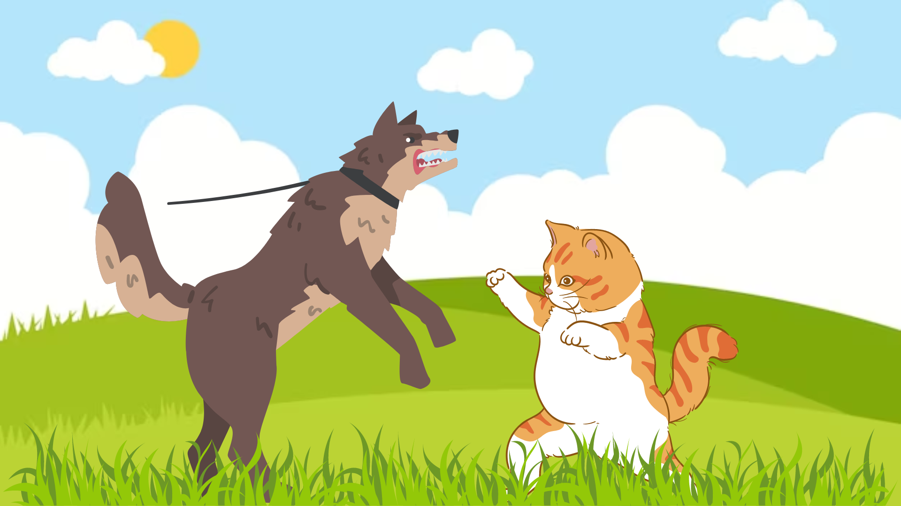
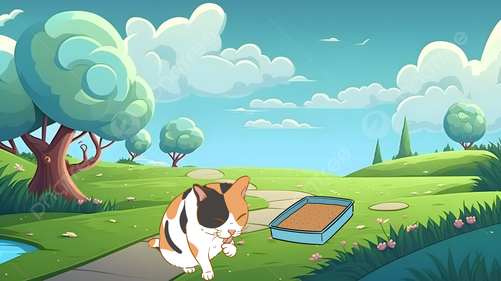
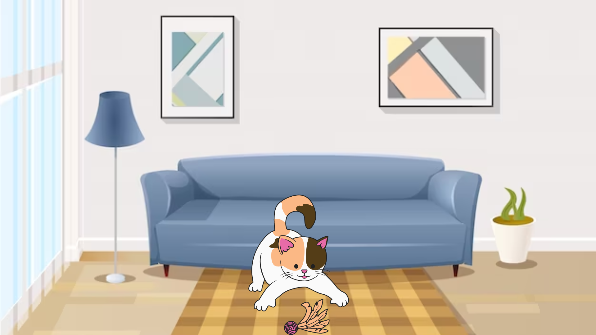
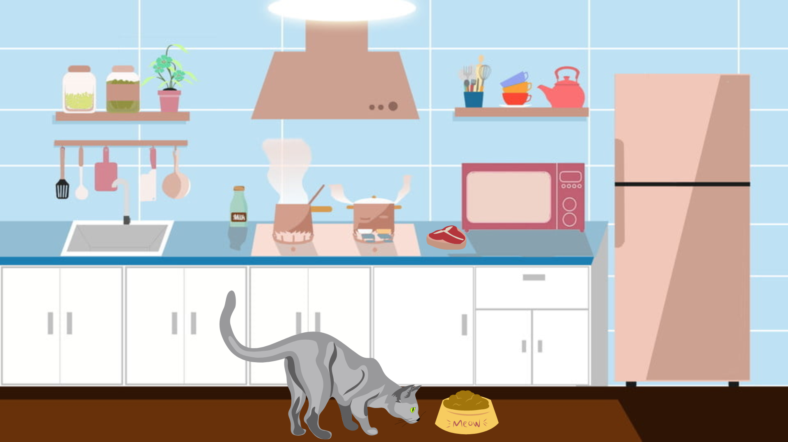
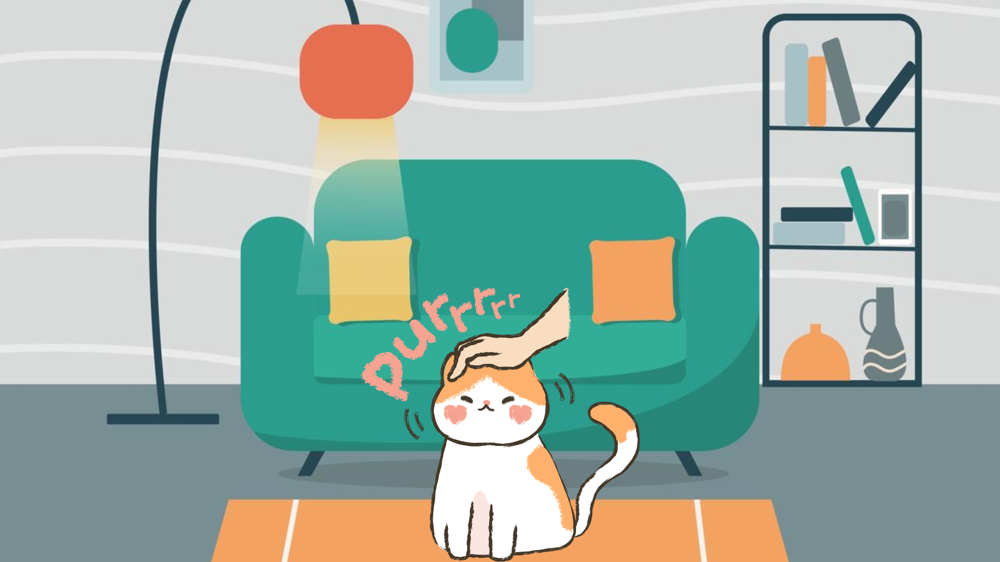
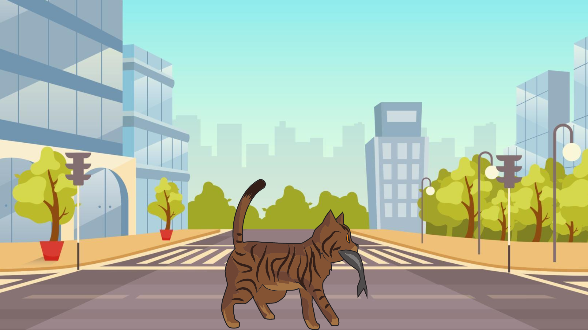
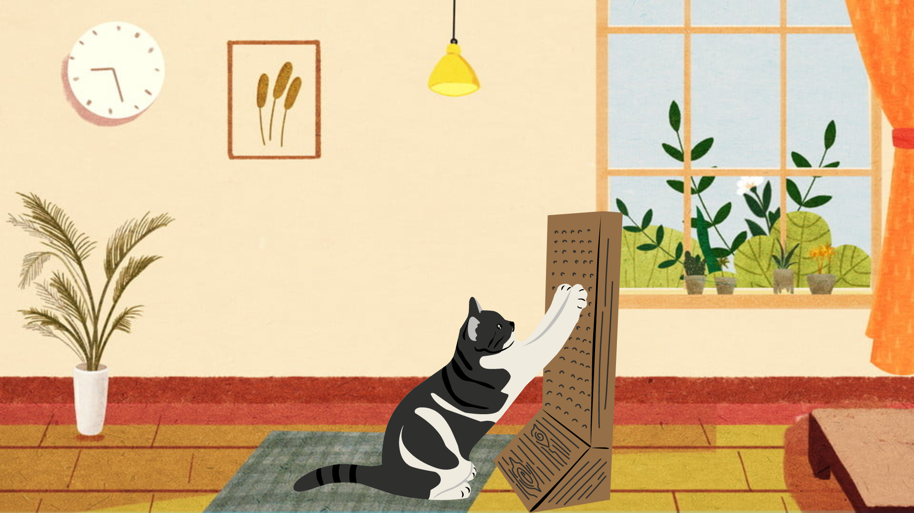
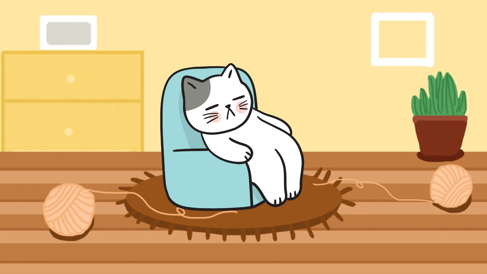
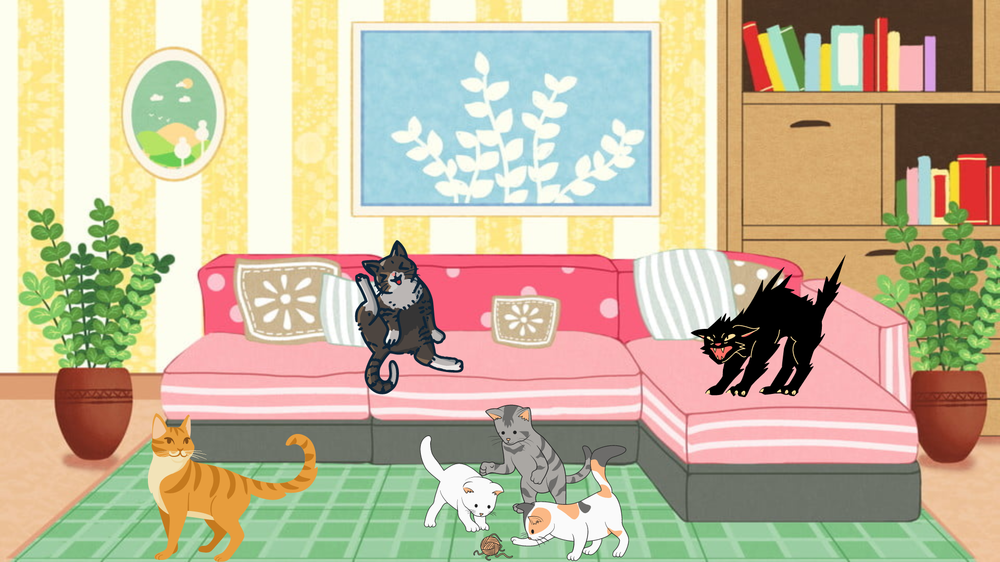

¿Cómo somos? :3
Independientes
Somos conocidos por ser animales independientes. Podemos pasar tiempo solos y cuidar de nosotros mismos en comparación con algunas otras mascotas que requieren más atención constante.
Limpios
Somos limpios por naturalezaaa. Pasamos gran cantidad de tiempo acicalándonos para mantener nuestro pelaje limpio y libre de suciedad.
Ágiles y con destreza
Somos muy ágiles y poseemos una gran destreza. Podemos saltar alturas impresionantes, trepar superficies verticales y realizar movimientos rápidos y precisos.
Buen sentido del oído y el olfato
Tenemos un muy buen oído y olfato. Podemos escuchar sonidos de alta frecuencia que son inaudibles para ti y también gracias a nuestro olfato agudo podemos detectar olores en nuestro entorno.
Visión Nocturna
Nuestros ojos están adaptados para funcionar bien en condiciones de poca luz. Tenemos una gran cantidad de células sensibles a la luz, estas son llamadas bastones y se encuentran en nuestras retinas, gracias a ellas podemos ver en la oscuridad mucho mejor que ustedes.

Comunicación corporal
Nosotros usamos nuestro cuerpo y cola para comunicarnos. Si colocamos nuestras orejas para adelante les queremos decir que estamos interesados o tenemos curiosidad, si las aplanamos hacia atrás es porque estamos asustados o enojados, y si agitamos nuestra cola de diferentes maneras es porque estamos expresando diferentes emociones.

Ronroneo
RrrrrRrrrr... Lo hacemos cuando estamos contentos o relajados, pero también podemos hacerlo cuando estamos estresados o con dolor. La mayoría de veces esta es una forma de comunicarnos con ustedes u otros gatos.
Instinto cazador
Somos cazadores por naturalezaaaa. Aunque muchos de nosotros estamos domesticados y no practicamos la caza para sobrevivir, todavía lo hacemos para perseguir y cazar juguetes u objetos pequeños como una forma de ejercicio y estimulación.
Territorialidad
Somos territoriales y aveces marcamos nuestro territorio con secreciones de nuestras glándulas de nuestras mejillas y patas. También solemos arañar superficies para dejar marcas visuales y olfativas.
Dormilones
Está bien lo aceptamos, somos muy dormilones, en promedio dormimos entre 12 y 16 horas al día. Pero no nos culpes, esto es parte de nuestra naturaleza felina y nos ayuda a conservar energías.
Varias personalidades
Por último y menos importante, estamos locos :D, jajajaja ya bueno, hablando más serios, cada uno de nosotros poseemos una personalidad única, algunos somos juguetones y extrovertidos, otros reservados y tímidos, nuestra personalidad puede variar según nuestra crianza, genética y/o experiencias.
